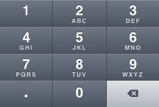

KAIST Acedemic System Over the Phone: User
In this activity, you will be the user in a formative evaluation of KAIST Acedemic System Over the Phone, a touchtone phone UI for enrolling in KAIST classes.
As the user:
- Perform each of the three tasks below, while thinking aloud.
- Use the keypad as a guide, but speak your number presses to the facilitator.
- At any time you can say 'hang up' to restart the call.
Tasks
You are enrolled in PH311 (20.311), EE304 (35.304), and CS374 (36.374).
- Enroll in both CS380 (36.380) - Computer Graphics and HSS159 (10.144) - Introduction to Economics
- Change status of PH311 (Thermal Physics) to Listener
- Drop EE304 - Electronic Circuits
